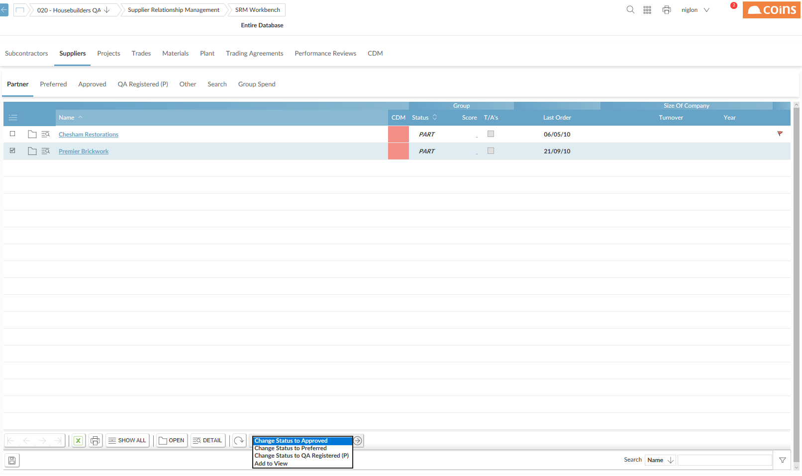

Approval Levels (Status Codes)
Approval levels allow you to classify and subcontractors based on your relationship with them. For example, you might categore your into "Supply Chain Partners", "Preferred " and "Approved ". Screens in SRM Workbench show them on different tabs according to their approval level and you can search for them according to approval level.
Approval levels work by assigning a status code to the or subcontractor. You can have up to four "positive" levels of approval (that is, approval levels you want to focus on), corresponding to four different status codes. Each of these show on a separate tab. Companies with other status codes can be shown on the "Other" tab.
A particular level in the structure of your organation (for example, branches or divisions) has the responsibility for setting approval levels. If an individual user is viewing companies in SRM Workbench at a higher level than that, uses the lowest-ranking status code at the level below to determine where to display each company.
To change the approval level of a company:
Your current view must be set to the level at which approval levels are set; if not, use Select Level to set your view level.
- In SRM Workbench, click the tab that the company is currently shown on.
-
the company whose approval level (status) you want to change.
- Use the Choose Action selector to set the new level, and click
 .
.

-
The company disappears from the current tab and is shown on the new tab.
If a company is both a and a subcontractor, you cannot give a different status code for "as a " and "as a subcontractor".
Approval levels - configuration
Set up the status codes you want to use for approval levels using Status Codes (Group Wide). uses the description of the code as the label on the corresponding tab and the field labels in the Search tab in SRM Workbench.
Set the following parameter values to the status codes you want to use for each of four levels of approval. Note that these are in order, with the highest level of approval at the top:
- SRM/SCD-PART - the highest approval level, for example "Supply Chain Partner"
- SRM/SCD-PREF - the second level of approval, for example "Preferred "
- SRM/SCD-APP - the third level of approval, for example "Approved"
- CI/SCD-REG - the status code for companies that are registered in - not specifically approved.